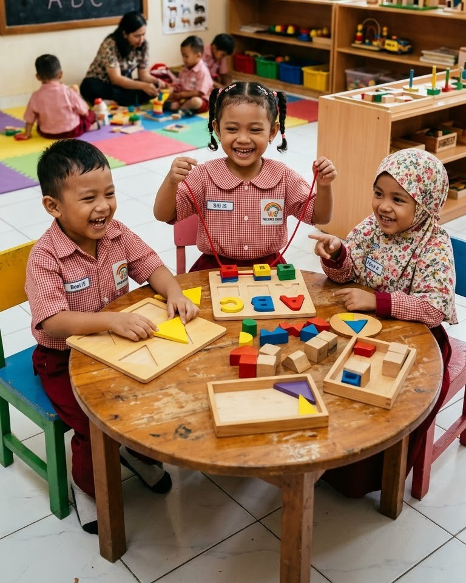

Tentang sekolah
Mengenal Bali Global Kinder School.
Sekolah anak usia dini di Dalung, Badung, tempat anak belajar lewat bermain dengan semboyan Learn, Play, Grow.

- LearnMengamati dan mencoba
- PlayBermain dan berbagi
- GrowBertumbuh bersama

Profil singkat
Sekolah kecil dengan rumah yang hangat bagi rasa ingin tahu.
- 3kelompok belajar
- 4pengalaman belajar
- 6pendamping contoh
Cerita sekolah
Bali Global Kinder School berawal dari keyakinan sederhana: anak belajar paling baik ketika ia merasa aman, didengar, dan bebas mencoba. Dari sebuah rumah belajar di Dalung, sekolah tumbuh menjadi tempat anak mengenal teman, guru, dan dunia di sekitarnya.
Setiap hari dirancang agar belajar, bermain, dan bertumbuh berjalan bersama, dengan guru yang mendampingi tanpa terburu-buru.
Filosofi
Tiga gagasan yang berjalan bersama.
Belajar, bermain, dan bertumbuh tidak dipisahkan. Ketiganya terjadi dalam satu hari anak di sekolah.
-
01
Learn
Anak mengenal hal baru dari pengalaman yang dekat dengan keseharian: mengamati, bertanya, dan mencoba.
-
02
Play
Bermain menjadi cara anak memahami dunia, berlatih bekerja sama, dan mengekspresikan diri.
-
03
Grow
Anak bertumbuh dengan ritme masing-masing, didampingi orang dewasa yang mengenali kebutuhannya.
Pendekatan pendidikan
Cara kami mendampingi anak.
-
01
Mengamati sebelum menilai
Guru memulai dari pengamatan: apa yang menarik bagi anak hari ini, dan apa yang sedang ia coba pahami.
-
02
Belajar lewat bermain
Kegiatan dirancang sebagai permainan bermakna, sehingga anak terlibat dengan senang hati.
-
03
Bertahap dan sesuai usia
Setiap kelompok memakai pengalaman yang sama dengan kedalaman yang disesuaikan.
-
04
Bermitra dengan orang tua
Orang tua mendapat kabar yang jelas dan dilibatkan dalam perkembangan anak.
Visi
Menjadi tempat anak bertumbuh dengan ceria, percaya diri, dan penuh rasa ingin tahu.
Rumusan visi dan misi adalah contoh demonstrasi dan akan diganti dengan rumusan resmi sekolah.
Misi
- Menyediakan lingkungan yang aman, hangat, dan menyenangkan bagi anak.
- Merancang kegiatan bermain yang menumbuhkan rasa ingin tahu dan kreativitas.
- Mendampingi tiap anak sesuai ritme dan kebutuhannya.
- Menjalin komunikasi yang terbuka dengan keluarga.
Nilai sekolah
Lima nilai yang kami rawat setiap hari.
- Rasa ingin tahu
- Kebersamaan
- Kemandirian
- Rasa hormat
- Keceriaan
Pengajar
Kenali pendamping belajar anak.
Makna singkat logo.
Logo menggambarkan suasana belajar yang ceria dengan unsur berikut.
- Tiga anak bergandengan tangan di bawah pelangi.
- Lengkung pelangi menaungi bukit hijau dan pepohonan.
- Lambang buku terbuka dengan nyala di bagian tengah.
- Tulisan Learn, Play, Grow di tepi bawah lingkaran logo.
Identitas institusi
Data lembaga.
- Nama lembaga
- Bali Global Kinder School
- Jenjang
- PAUD: Kelompok Bermain, TK A, TK B (contoh)
- NPSN
- Diisi oleh sekolah
- Izin operasional
- Diisi oleh sekolah
- Akreditasi
- Diisi oleh sekolah
- Alamat